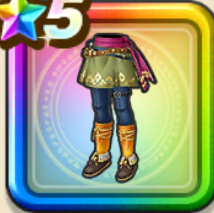

カミュのズボン
攻略班 9.5点 / 縛り耐性+5%守備減耐性+10%縛り耐性+10%守備減耐性+10%スキルの体技ダメージ+9%会心率+3%【晴れ】会心率+2%
くわしい特徴
【レベル別習得スキル】 Lv1縛り耐性+5% Lv5【盗賊】すばやさ+3 Lv8守備減耐性+10% Lv10スキルの体技ダメージ+9% Lv12会心率+3% Lv15【晴れ】会心率+2% Lv20縛り耐性+10% Lv23すばやさ+7 Lv25守備減耐性+10% 【限界突破スキル】 1凸攻撃力+12 2凸すばやさ+12 3凸守備力+12 4凸さいだいHP+12